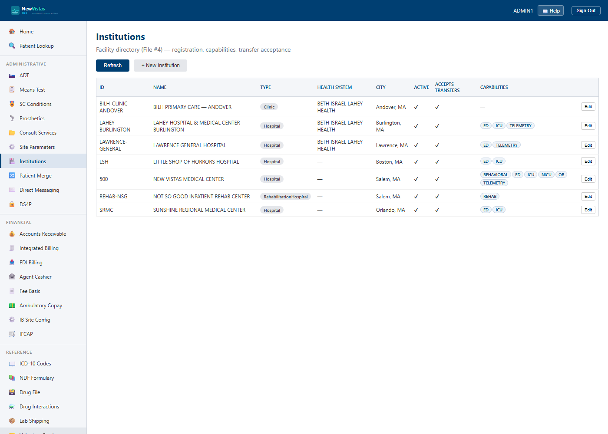

Institutions — the facility directory
An institution is a facility in the deployment — a hospital,
critical-access hospital, clinic, rehab, or CLC (VistA FILE #4). Institutions are
what units, beds, ADT movements, and transfers hang off of, and grouping several
of them under one health system (e.g. BILH) is what makes the
Transfer Center and system-wide capacity
possible. Creating and editing institutions requires the XUMGR key.
Open the directory
- In the sidebar, under System Admin, click Institutions (or go to
/admin/institutions). - The list shows every institution — active and inactive — with its health system, type, city, active flag, whether it accepts inbound transfers, and its capability chips.

Add or edit an institution
- Click New institution (or Edit on a row).
- Set the Id (canonical, used everywhere — e.g.
LAWRENCE-GENERAL), Name, and Type. - Optionally set the Health system id + name (the grouping — e.g.
BILH/ Beth Israel Lahey Health), station number, and address. - Tick the Capabilities the site has (ICU, Telemetry, Peds, NICU, OB, Behavioral, Rehab, ED) — the Transfer Center uses these to filter placement targets.
- Leave Accepts inbound transfers on unless the site is on diversion; toggle Active to retire a site.
- Save.
500 lists legacy aliases (MAIN,
INST-500) so records written before institutions were first-class
still resolve to it — you don't have to migrate old data.
Health systems & system-wide capacity
A health system is a plain grouping field, not a separate record — several
institutions simply share a HealthSystemId. That grouping is what a
transfer coordinator sees when placing a patient: the system-wide capacity view and
the Transfer Center's placement-target search fan out across the institutions in a
health system and show only those with a real, placeable bed of the requested kind.